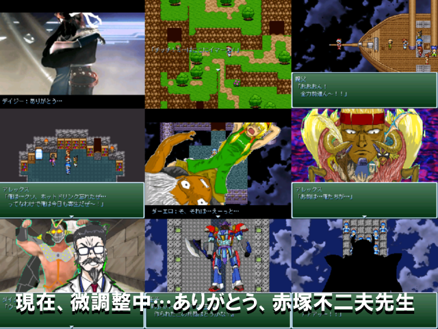

No.39
ツクールデイズ-Tkool Days-

| ジャンル： | ツクールから始まる恋愛AVG |
| 推定プレイ時間： | 1時間くらい、高橋名人との約束も守れます |
| 使用ツクール | RPGツクール2000 |
| 作者：やまだてつを |
| 「フィオナ！お前は、お前は俺のすべてだ！ 俺のおふくろであり、俺の体であり、俺の血だ！目、鼻、耳だ！」 「アレックス聞いて…私が死ぬことにより恐ろしいことがおこるわ…」 「私は…私は全ての作品をエターならせる、神々を呼ぶための"スイッチ"なの…」 「スイッチ？」 その時、空は漆黒の闇に閉ざさ、巨大な生命体が降りてきた…！ それこそがフィオナの言う神、"全てを無に還す者"なのだ！！ だが神々は全ての力を発揮するにはヘレンの血肉が必要だ… 本当の闘いはこれからだ！！ 「神々よ、ヘレンの体と血が欲しければ…とりにこい！」 |
| 感想を書く |